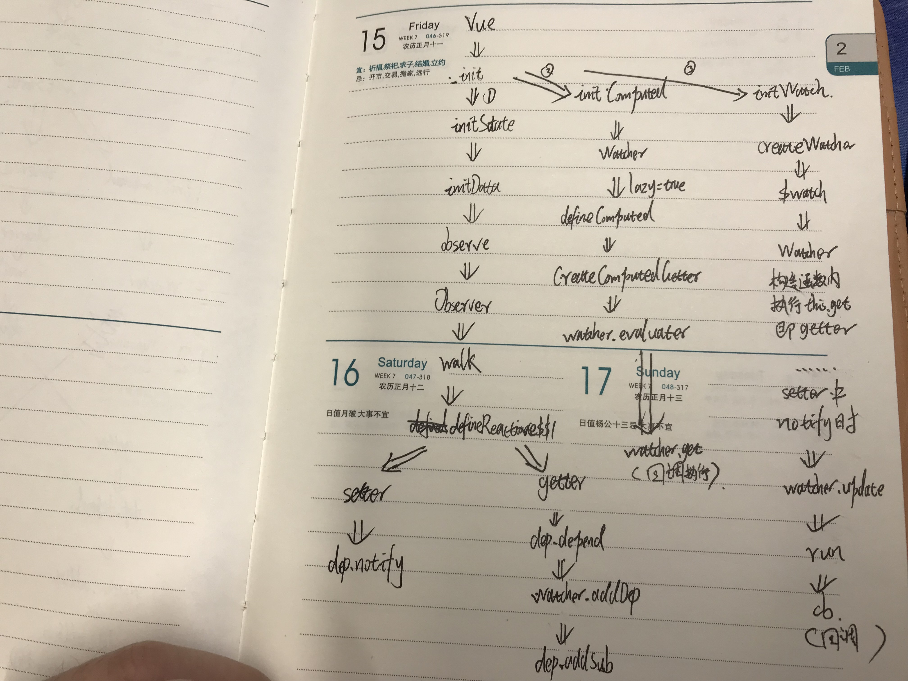

先来个流程图，水平有限，凑活看吧-_-||

首先在创建一个Vue应用时：
var app = new Vue({
el: '#app',
data: {
message: 'Hello Vue!'
}
})Vue构造函数源码：
//创建Vue构造函数
function Vue (options) {
if (!(this instanceof Vue)
) {
warn('Vue is a constructor and should be called with the `new` keyword');
}
this._init(options);
}
//_init方法，会初始化data,watch,computed等
Vue.prototype._init = function (options) {
var vm = this;
// a uid
vm._uid = uid$3++;
......
// expose real self
vm._self = vm;
initLifecycle(vm);
initEvents(vm);
initRender(vm);
callHook(vm, 'beforeCreate');
initInjections(vm); // resolve injections before data/props
initState(vm);
......
};在initState方法中会初始化data、watch和computed，并调用observe函数监听data(Object.defineProperty)：
function initState (vm) {
vm._watchers = [];
var opts = vm.$options;
if (opts.props) { initProps(vm, opts.props); }
if (opts.methods) { initMethods(vm, opts.methods); }
if (opts.data) {
initData(vm);//initData中也会调用observe方法
} else {
observe(vm._data = {}, true /* asRootData */);
}
if (opts.computed) { initComputed(vm, opts.computed); }
if (opts.watch && opts.watch !== nativeWatch) {
initWatch(vm, opts.watch);
}
}observe在initState 时被调用，为vue实例的data属性值创建getter、setter函数，在setter中dep.depend会把watcher实例添加到Dep实例的subs属性中，在getter中会调用dep.notify，调用watcher的update方法。
/**
* Attempt to create an observer instance for a value,
* returns the new observer if successfully observed,
* or the existing observer if the value already has one.
* 该函数在initState中有调用
*/
function observe (value, asRootData) {
if (!isObject(value) || value instanceof VNode) {
return
}
var ob;
if (hasOwn(value, '__ob__') && value.__ob__ instanceof Observer) {
ob = value.__ob__;
} else if (
shouldObserve &&
!isServerRendering() &&
(Array.isArray(value) || isPlainObject(value)) &&
Object.isExtensible(value) &&
!value._isVue
) {
ob = new Observer(value);
}
if (asRootData && ob) {
ob.vmCount++;
}
re * Observer class that is attached to each observed * object. Once attached, the observer converts the target
* object's property keys into getter/setters that
* collect dependencies and dispatch updates.
*/
var Observer = function Observer (value) {
this.value = value;
this.dep = new Dep();
this.vmCount = 0;
def(value, '__ob__', this);
if (Array.isArray(value)) {
if (hasProto) {
protoAugment(value, arrayMethods);
} else {
copyAugment(value, arrayMethods, arrayKeys);
}
this.observeArray(value);
} else {
this.walk(value);
}
};
/**
* Walk through all properties and convert them into
* getter/setters. This method should only be called when
* value type is Object.
*/
Observer.prototype.walk = function walk (obj) {
var keys = Object.keys(obj);
for (var i = 0; i < keys.length; i++) {
defineReactive$$1(obj, keys[i]);
}
};
/**
* Define a reactive property on an Object.
*/
function defineReactive$$1 (
obj,
key,
val,
customSetter,
shallow
) {
var dep = new Dep();
var property = Object.getOwnPropertyDescriptor(obj, key);
if (property && property.configurable === false) {
return
}
// cater for pre-defined getter/setters
var getter = property && property.get;
var setter = property && property.set;
if ((!getter || setter) && arguments.length === 2) {
val = obj[key];
}
var childOb = !shallow && observe(val);
Object.defineProperty(obj, key, {
enumerable: true,
configurable: true,
get: function reactiveGetter () {
var value = getter ? getter.call(obj) : val;
//Dep.target 全局变量指向的就是指向当前正在解析生成的 Watcher
//会执行到dep.addSub，将Watcher添加到Dep对象的Watcher数组中
if (Dep.target) {
dep.depend();
if (childOb) {
childOb.dep.depend();
if (Array.isArray(value)) {
dependArray(value);
}
}
}
return value
},
set: function reactiveSetter (newVal) {
var value = getter ? getter.call(obj) : val;
/* eslint-disable no-self-compare */
if (newVal === value || (newVal !== newVal && value !== value)) {
return
}
/* eslint-enable no-self-compare */
if (customSetter) {
customSetter();
}
// #7981: for accessor properties without setter
if (getter && !setter) { return }
if (setter) {
setter.call(obj, newVal);
} else {
val = newVal;
}
childOb = !shallow && observe(newVal);
dep.notify();//如果数据被重新赋值了, 调用 Dep 的 notify 方法, 通知所有的 Watcher } }); }Watcher的update方法是在new Dep的notify的方法中被调用的
/**
* A dep is an observable that can have multiple
* directives subscribing to it.
*/
var Dep = function Dep () {
this.id = uid++;
this.subs = [];
};
//设置某个Watcher的依赖
//这里添加Dep.target，用来判断是不是Watcher的构造函数调用
//也就是其this.get调用
Dep.prototype.depend = function depend () {
if (Dep.target) {
Dep.target.addDep(this);
}
};
//在该方法中会触发subs的update方法
Dep.prototype.notify = function notify () {
// stabilize the subscriber list first
var subs = this.subs.slice();
if (!config.async) {
// subs aren't sorted in scheduler if not running async
// we need to sort them now to make sure they fire in correct
// order
subs.sort(function (a, b) { return a.id - b.id; });
}
for (var i = 0, l = subs.length; i < l; i++) {
subs[i].update();
}
};初始化watch，函数中会调用createWatcher，createWatcher会调用$watch，$watch调用new Watcher实例。
function initWatch (vm, watch) {
for (var key in watch) {
var handler = watch[key];
if (Array.isArray(handler)) {
for (var i = 0; i < handler.length; i++) {
createWatcher(vm, key, handler[i]);
}
} else {
createWatcher(vm, key, handler);
}
}
}
function createWatcher (
vm,
expOrFn,
handler,
options
) {
if (isPlainObject(handler)) {
options = handler;
handler = handler.handler;
}
if (typeof handler === 'string') {
handler = vm[handler];
}
return vm.$watch(expOrFn, handler, options)
}
Vue.prototype.$watch = function (
expOrFn,
cb,
options
) {
var vm = this;
if (isPlainObject(cb)) {
return createWatcher(vm, expOrFn, cb, options)
}
options = options || {};
options.user = true;
var watcher = new Watcher(vm, expOrFn, cb, options);
if (options.immediate) {
try {
cb.call(vm, watcher.value);
} catch (error) {
handleError(error, vm, ("callback for immediate watcher \"" + (watcher.expression) + "\""));
}
}
return function unwatchFn () {
watcher.teardown();
}
};
}初始化computed，调用new Watcher()，并通过defineComputed函数将计算属性挂载到vue实例上，使计算属性可以在模板中使用
var computedWatcherOptions = { lazy: true }function initComputed (vm, computed) {
// $flow-disable-line
var watchers = vm._computedWatchers = Object.create(null);
// computed properties are just getters during SSR
var isSSR = isServerRendering();
for (var key in computed) {
var userDef = computed[key];
var getter = typeof userDef === 'function' ? userDef : userDef.get;
//getter也就是computed的函数
if (getter == null) {
warn(
("Getter is missing for computed property \"" + key + "\"."),
vm
);
}
if (!isSSR) {
// create internal watcher for the computed property.
watchers[key] = new Watcher(
vm,
getter || noop,
noop,
computedWatcherOptions
);
}
//组件定义的计算属性已在
//组件原型。我们只需要定义定义的计算属性
//在这里实例化。
if (!(key in vm)) {
defineComputed(vm, key, userDef);
} else {
if (key in vm.$data) {
warn(("The computed property \"" + key + "\" is already defined in data."), vm);
} else if (vm.$options.props && key in vm.$options.props) {
warn(("The computed property \"" + key + "\" is already defined as a prop."), vm);
}
}
}
}
function defineComputed (
target,
key,
userDef
) {
var shouldCache = !isServerRendering();//true
if (typeof userDef === 'function') {
sharedPropertyDefinition.get = shouldCache
? createComputedGetter(key)
: createGetterInvoker(userDef);
sharedPropertyDefinition.set = noop;
} else {
sharedPropertyDefinition.get = userDef.get
? shouldCache && userDef.cache !== false
? createComputedGetter(key)
: createGetterInvoker(userDef.get)
: noop;
sharedPropertyDefinition.set = userDef.set || noop;
}
if (sharedPropertyDefinition.set === noop) {
sharedPropertyDefinition.set = function () {
warn(
("Computed property \"" + key + "\" was assigned to but it has no setter."),
this
);
};
}
Object.defineProperty(target, key, sharedPropertyDefinition);
}
//computed的getter函数，在模板获取对应computed数据时会调用
function createComputedGetter (key) {
return function computedGetter () {
var watcher = this._computedWatchers && this._computedWatchers[key];
if (watcher) {
if (watcher.dirty) {//true
watcher.evaluate();//该方法会调用watcher.get方法，也就是computed对应的函数
}
if (Dep.target) {
watcher.depend();
}
return watcher.value
}
}
} 通过以上代码可以看到watch和computed都是通过new Watcher实例实现数据的监听的，但是computed的options中lazy为true，这个参数导致它们走的是两条不同路线。
computed：模板获取数据时，触发其getter函数，最终调用watcher.get，也就是调用对应回调函数。
watch：模板获取数据时，触发其getter函数，将watcher添加到对应的Dep.subs中，在之后setter被调用时，Dep.notify通知所有watcher进行update，最终调用watcher.cb,也就是调用对应回调函数。
构造函数在是watch时，会最后调用this.get，会触发属性的getter函数，将该Watcher添加到Dep的subs中，用于通知数据变动时调用。
调用Watcher实例的update方法会触发其run方法，run方法中会调用触发函数。其depend方法会调用new Dep的depend方法，dep的depend会调用Watcher的addDep方法，最终会把该watcher实例添加到Dep的subs属性中
/**
*观察者解析表达式，收集依赖项，
*并在表达式值更改时激发回调。
*这用于$watch（）api和指令。
*/
var Watcher = function Watcher (
vm,
expOrFn,
cb,
options,
isRenderWatcher
) {
this.vm = vm;
......
this.cb = cb;//触发函数
this.id = ++uid$2; // uid for batching
this.active = true;
this.dirty = this.lazy; // for lazy watchers
......
this.value = this.lazy ? undefined ? this.get();//computed会返回undefined，而watch会执行Watcher.get
};
/**
* Scheduler job interface.
* Will be called by the scheduler.
* 该方法会执行触发函数
*/
Watcher.prototype.run = function run () {
if (this.active) {
var value = this.get();
if (
value !== this.value ||
// Deep watchers and watchers on Object/Arrays should fire even
// when the value is the same, because the value may
// have mutated.
isObject(value) ||
this.deep
) {
// set new value
var oldValue = this.value;
this.value = value;
if (this.user) {
try {
this.cb.call(this.vm, value, oldValue);
} catch (e) {
handleError(e, this.vm, ("callback for watcher \"" + (this.expression) + "\""));
}
} else {
this.cb.call(this.vm, value, oldValue);
}
}
}
};
/**
* Evaluate the getter, and re-collect dependencies.
*/
Watcher.prototype.get = function get () {
pushTarget(this);
var value;
var vm = this.vm;
try {
value = this.getter.call(vm, vm);
} catch (e) {
if (this.user) {
handleError(e, vm, ("getter for watcher \"" + (this.expression) + "\""));
} else {
throw e
}
} finally {
// "touch" every property so they are all tracked as
// dependencies for deep watching
if (this.deep) {
traverse(value);
}
popTarget();
this.cleanupDeps();
}
return value
};
/**
* Subscriber interface.
* Will be called when a dependency changes.
* 在方法中调用Watcher的run方法
*/
Watcher.prototype.update = function update () {
/* istanbul ignore else */
if (this.lazy) {
this.dirty = true;
} else if (this.sync) {
this.run();
} else {
queueWatcher(this);//该方法最终也会调用run方法
}
};
/**
* Depend on all deps collected by this watcher.会调用new Dep的depend方法，dep的depend会调用Watcher的addDep方法
*/
Watcher.prototype.depend = function depend () {
var i = this.deps.length;
while (i--) {
this.deps[i].depend();
}
};
/**
* Add a dependency to this directive.
*/
Watcher.prototype.addDep = function addDep (dep) {
var id = dep.id;
if (!this.newDepIds.has(id)) {
this.newDepIds.add(id);
this.newDeps.push(dep);
if (!this.depIds.has(id)) {
dep.addSub(this);
}
}
};